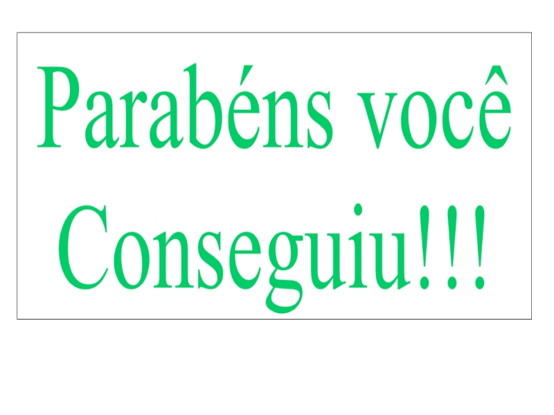
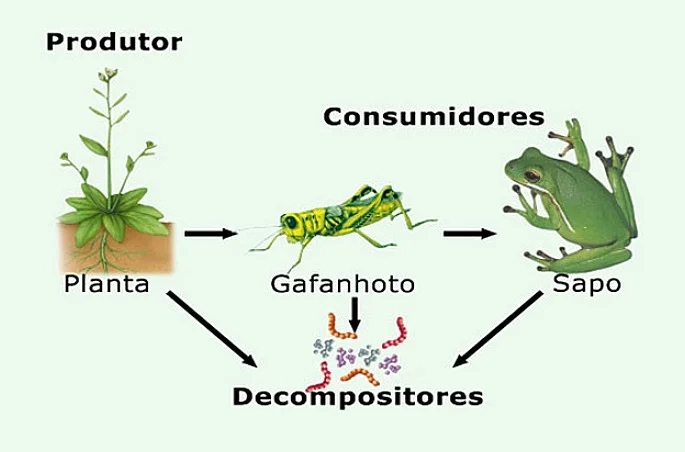

Cadeia Alimentar
A Cadeia Alimentar é o percurso de matéria e energia que se inicia
sempre com seres produtores e termina nos decompositores.
Ela corresponde à relação de alimentação, ou seja,
à absorção de nutrientes e energia entre os seres vivos.
Podemos dizer que a cadeia alimentar refere-se
ao processo em que um ser vivo serve de alimento para outro.
Componentes da cadeia alimentar
Os componentes da cadeia alimentar correspondem
a toda parte viva que a compõe. Eles são classificados em produtores,
consumidores e decompositores, cada um deles representa um nível trófico.
